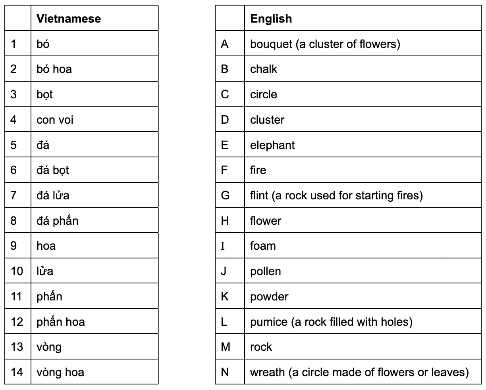
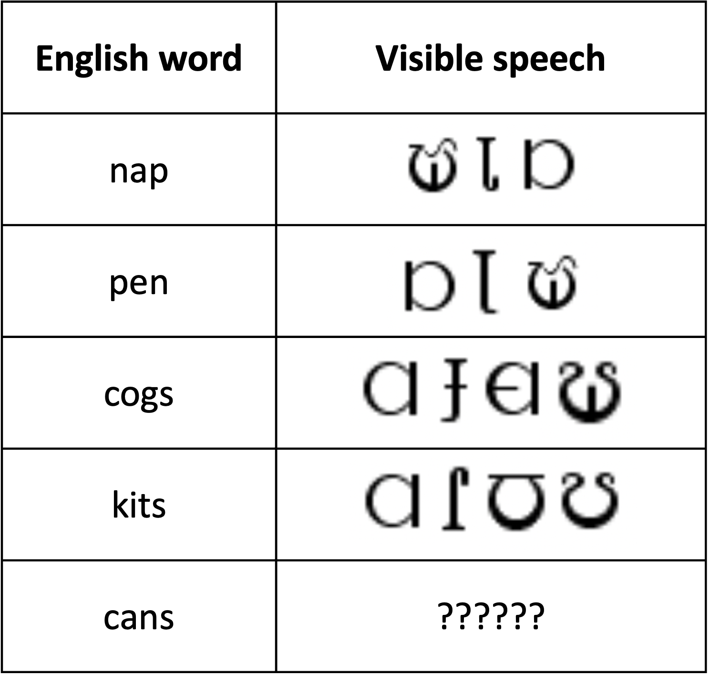
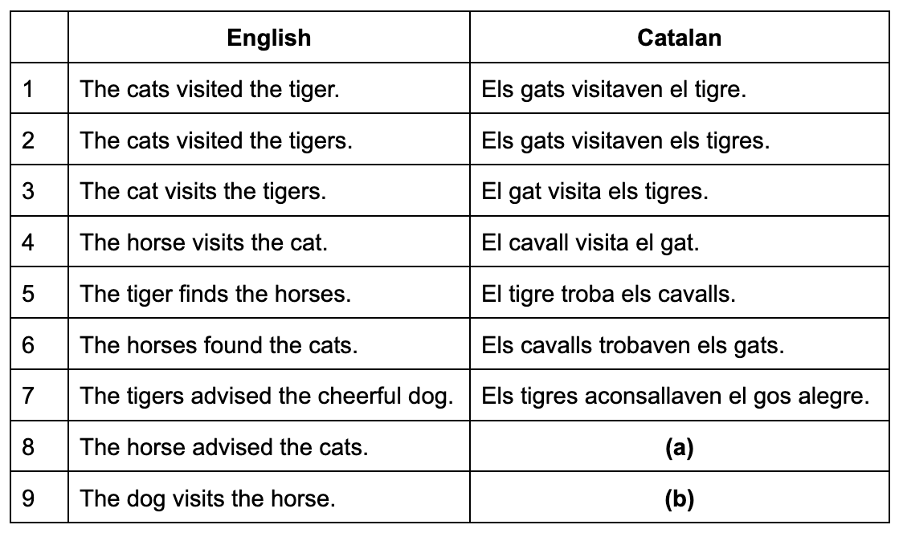

Exercises in Verifying Solvability
Below are three exercises that give you practice in verifying that a NACLO problem is solvable (i.e., ensuring that there is one and only one solution). Please try each of them and send your answers to Tom (tom.mccoy@princeton.edu). Some of these exercises are based on real NACLO problems, but the issues that the problems have were not present in those actual problems (that is, you should not judge the authors of those problems for the mistakes illustrated here, since the authors did not make the mistakes—we have added mistakes here for the purpose of these exercises). Nonetheless, all of the mistakes illustrated here belong to general categories that have been observed in actual submitted problems.
All of these exercises are structured similarly: We have provided the problem and the intended solution, but there is too little information to uniquely identify the intended solution, meaning that there is also at least one alternative solution. It is your job to figure out what these unintended alternative solutions are.
Exercise 4: Vietnamese
Below is a problem about Vietnamese along with its intended solution. But be warned: the problem cannot be solved in its current form because there are multiple potential solutions! However, you can make it solvable by removing 3 Vietnamese phrases (and the corresponding English translations). Which 3 phrases can you remove to make this happen? There are multiple possible answers. [Note: You do not need to send answers to the problem—you only need to say which 3 phrases could be removed to make the problem solvable.]
Problem: On the left are 14 phrases in Vietnamese. On the right are the English translations but in scrambled order. Match the Vietnamese and English words.
Intended solution:
Exercise 5: Visible speech
Below is a problem about Visible Speech, an alternative way of writing English invented by Alexander Melville Bell (the father of Alexander Graham Bell). But in addition to the intended solution, there is also an alternative solution! Briefly describe the alternative analysis of the data, and state what answer this alternative analysis would produce for the question. Note: the symbols used in Visible Speech have a systematic structure; if solvers notice this systematic structure, that would be enough to eliminate the alternative solution. However, for purposes of this exercise, please ignore the systematic structure of the symbols—treat it as though they are all random symbols.
Problem: Below are some words written in the standard English alphabet and in Visible Speech. Fill in the blank in the table.
Intended solution: The writing system is phonetic. For example, cogs and kits start with the same symbol because they start with the same sound, even though they are written with different letters in standard English. Similarly, they end with different symbols because cogs ends with a z sound while kits ends with an s sound. Based on this, we would write cans as follows:
Exercise 6: Catalan
Below is a problem about Catalan, a language in the Romance family, along with its intended solution. But be warned: the problem does not have enough information to be solved (there are multiple possible solutions). Propose a single new example of an English sentence with its Catalan translation that could be added in order to ensure that both of the questions can be answered unambiguously. [Note: solving this problem might be easy for people who know Spanish or another Romance language, but for the purpose of this exercise, you should assume that solvers will have no knowledge of languages other than English].
Problem: Below are some sentences in English along with their translations into Catalan. Fill in the missing cells.
Intended solution: We can see that el means the when applied to a singular noun, and els means the applied to a plural noun. Also, a verb ends with -a if it is singular or -en if it is plural, with -av added before the singular/plural ending if the verb is past tense; overall, then, the verb endings are -a for present singular, -en for present plural, -ava for past singular, and -aven for past plural. Applying these rules gives us:
(a): El cavall aconsallava els gats.
(b): El gos visita el cavall.